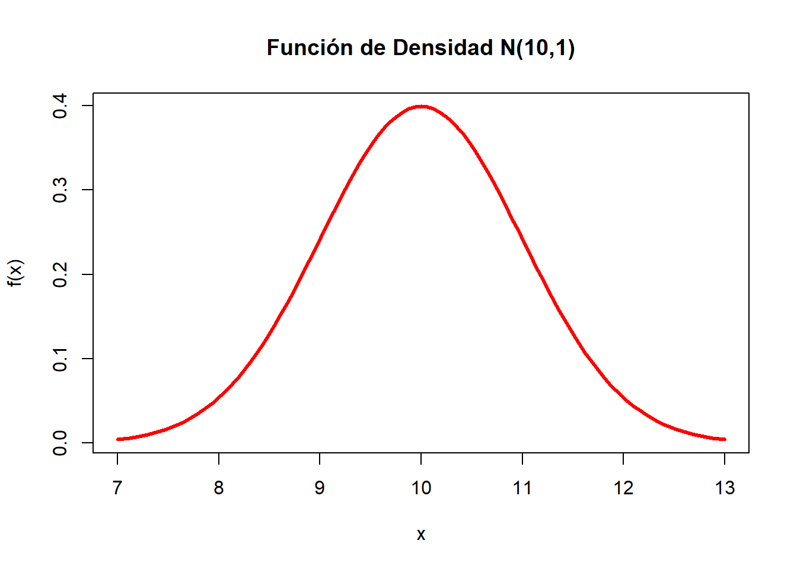

En la estadística se trabaja con una alta gama de distribuciones discretas y continuas, de las cuales la mayorias de casos se usan las distribuciones continuas
Una de las distribuciones mas utilizadas es la distribución normal, por lo cual programas como R tiene a disposición del usuario comandos predeterminados que permiten calcular la funación de
Ahora se hará un ejemplo para ilustrar como se construye una función de densidad en R, en este caso se hará para una variable cuantitativa:
Se generará una secuencia de números el cual seran los datos sobre los cuales se generará la función de densidad.
x= seq(260,280, by=0.5)
dnorm(x, 270,11)## [1] 0.02399147 0.02497780 0.02595102 0.02690650 0.02783958 0.02874556
## [7] 0.02961977 0.03045757 0.03125443 0.03200594 0.03270787 0.03335620
## [13] 0.03394718 0.03447732 0.03494346 0.03534281 0.03567294 0.03593185
## [19] 0.03611792 0.03623003 0.03626748 0.03623003 0.03611792 0.03593185
## [25] 0.03567294 0.03534281 0.03494346 0.03447732 0.03394718 0.03335620
## [31] 0.03270787 0.03200594 0.03125443 0.03045757 0.02961977 0.02874556
## [37] 0.02783958 0.02690650 0.02595102 0.02497780 0.02399147ahora se hará la gráfica de densidad
curve(dnorm(x,170,15),xlim=c(130,210),col="red",lwd=2,
xlab="x",ylab="f(x)",main="Función de Densidad N(170,15)")